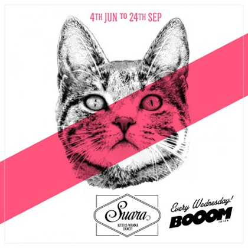

Coyu and his kitties wanna dance this summer in Ibiza
{kind=link}

As if Barcelona nice-guy Coyu and his Suara label weren’t already successful enough; he and his cast of kitties have world domination on their mind, via a headline Ibiza residency that kicks off this Wednesday at BoOom!, one of the island’s newest high-profile clubs.
It’s a big step for a modest, and highly credible house and techno label, though as Coyu himself describes it, last year Suara “grew one, two or even three steps up in a very short time.”
Established in 2008, and with already well over 100 releases under its belt, 2013 proved to be the tipping point. Tube & Berger’s massive Imprint of Pleasure went stratospheric, clocking in as the #1 selling Tech House track on Beatport by the year’s end, while Technasia’s I Am Somebody also did the damage.
Looking beyond the success of any one record though, it was the versatile sounds and overall strength of the label that was the real success story.
That’s not to say though that the new Suara residency is a guaranteed success; last year was notoriously tough for the host of new nights that began across the island, with many of them conspicuously absent this year. Coyu faces a tough challenge in getting a new residency off the ground.
On the same note though, BoOom! Club itself is in great need some fresh new faces, to allow it to truly make its mark on Ibiza… Coyu and his kitties might just prove to be exactly what the club needs. I Voice talks to the man himself prior to the new residency’s launch this Wednesday 4th June.
{kind=link}
Hi Coyu, hope you are well! There is a lot happening for you and the Suara label this year, how is everything going?I feel Suara needs to have its own weekly party in Ibiza. It's necessary for the growth of the brand. Ibiza is the place to be, and it’s the door for making something big in the future...2014 looks like it's going to be the biggest year of the young history of Suara so far. We will host a weekly party in Ibiza for the very first time, and we don't wanna lose the chance to keep growing up as label and brand. Suara is at full strength and releasing one new EP per week from top artists like Technasia, Joeski, Tube & Berger, Jewel Kid, Slam, Kaiserdisco, Gabriel Ananda, Sonic Future, Edu Imbernon and Ramiro López to name a few.
I was also hoping to finish my first album before the start of the summer season, which then would have left enough time to work on the post-production and promotion after the summer and then release it in the first months of 2015, but it has been impossible. I will try it again, as soon as the busy schedule of trips and gigs permits me.
Last year was a huge year for the label, with some particularly big releases and the excitement really building around the Suara brand. What were the most important successes for you?My philosophy is going step by step, but last year we grew one, two or even three steps up in a very short time. Big hits like Tube & Berger Imprint of Pleasure or Technasia I Am Somebody helped us to reach a bigger audience, but our main goal was keep the quality in every single record we released over the year. I also admit it was a great sensation when we placed up to 32 tracks in the Beatport Top 100, or became Resident Advisor’s most charted label of 2013… All this would be impossible without a current team of 11 people, as a football team!
Obviously the biggest news for Suara this year is your Ibiza residency! This is a massive step for any label, tell us a bit about the process of what led you there.A 17-week Suara residency at BoOom! Ibiza it is a huge responsibility that we are happy to take. We're very enthusiastic. You will find quality artists playing anything from house to techno, from techno to house.
We have put together a line-up of amazing artists that includes: Pleasurekraft, Kenny Larkin, Kevin Saunderson, Tiefschawrz, Tube & Berger, Gui Boratto, Kolombo, Audiojack, Joeski, Christian Smith, Andre Crom, Gary Beck, Noir, Edu Imbernon, Pig & Dan, Dosem, Carlo Lio, Uto Karem, Jay Lumen, Marco Bailey and many others...
{kind=link}
I do not want to forget to mention that we’ve prepared also pre-parties at Hotel Santos and Café del Mar every Wednesday before the night sessions. And a last surprise, boat parties with the friends of Ibiza Global Radio. I cannot wait and get started!
You’ve got your opening party coming up this week. What can we expect?I'm a very eclectic DJ. I like house and I like techno. I like deep and powerful sounds. So as you can imagine, Suara at BoOom! will offer very different music even on the same night.
The Opening party is a good example. Pleasurekraft and Andre Crom represent our deepest and sexiest side, and Carlo Lio and Ramiro Lopez are very groovy and techy. I think this is quite rare in Ibiza. Every brand has its own sound, and they offer you the same music during the whole night and season. Suara is just the opposite. We don't have a ‘proper’ sound, and we like to mix genres all the time.
We want to offer our Suara lovers a proper Suara experience, from the moment they land in Ibiza... Overall, what will be the approach for the Coyu residency in terms of visuals, the theme, the musical guests that will be inviting to play and so forth?We want to offer our Suara lovers a proper Suara experience, from the moment they land in Ibiza. We will try to offer best quality dance music from all the top artists mentioned before plus the rest, all of them are essential. We are also about to create a great club atmosphere and cats, a lot of cats.
And it seems the kitties will play a big role in the residency! Tell us more about that.Sure, Suara is all about music... and cats! So cats will have a prominent role over the season. We can't say too much about it yet, I prefer you see it with your eyes at the Opening Party! Wait for the new promo-video we’ve prepared and guess who the little friend on the decks is! Cats landed in my life thanks to my girlfriend, she is a vet. Suara was the name of one of her kitties.
{kind=link}
We changed Suara's designer exactly 5 years ago. We didn't have anything related cats before work with this new designer, but the first thing I asked him when he started to work with us was to “paint a cat”.
People loved it, and we decided to show up cats in all our covers. During this year we started also with a first boys and girls clothes collection (t-shirts, bags, bracelets, etc). Day by day the people started to know us as the label of the cats and the rest is history! Everything about cats came to stay and to be with me for the rest of my life.
It was also announced that Suara will donating some of the proceeds from the residency to different cat shelters of Ibiza. Tell us about the Suara Foundation.Quite so! Suara Foundation is the place where we try to bring back to the cats what they have done for us. As said before my girlfriend is a feline vet, together we run the foundation, although she does almost everything. We are not a shelter, but we help to different shelters and associations to pay the vet costs. That's exactly what we will do in Ibiza this season. We will collaborate with different shelters and local associations.
Let’s talk about the challenges of running a successful night in Ibiza! Last year saw a lot of new nights starting across the island, and many of them won’t be returning this year. How will you face these challenges? What makes you feel this is the right time for Suara?BoOom! opened their doors very late last year and it made everything more difficult for them. But this year looks quite different. Defected did their Opening Party two weeks ago and it was extremely packed. We feel BoOom! is the perfect place for us because we're a new brand doing its first approach to Ibiza. We cannot make parties for 10.000 people every week yet. BoOom! has a perfect size for us.
Suara - Kitties Wanna Dance!
Wednesday 04th June to 24th September @ BoOom! Ibiza
Full Line up here